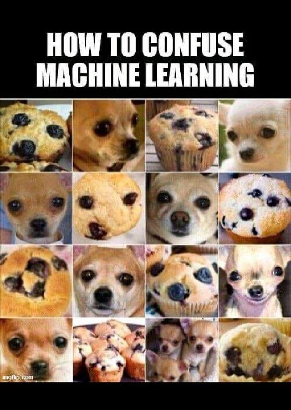
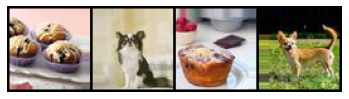

Problem:
We humans can get confused by many visual aspects. Whether that's due to image tricks
or just simple image similarities. In our project, we experiment this phenomenon with
Computer Vision techniques to see how computers can react to this slight differences.
The following meme shows the confusion we try to create in our Computer Vision model:

Data:
We chose the following
Kaggle Dataset.
This dataset includes 6,000 scraped images from Google Image without duplicates.
80% of our data is used to train our model and 20% of the data is used for testing.
Here are some sample pictures of our dataset:

Processing:
To ensure uniformity of our data for training. We first filtered images by
their aspect ratio such that we only have square images with a 1:1 ratio. Since our GPUs
have limited memory, we decided to scale down images to a jpeg format with a size of 64x64x3.
Images are also flipped 50% of the time horizontally in our training dataset to ensure
more randomness. Finally, only a batch size of 128 is used to load the data for every
training iteration.
Algorithm:
We use a binary Classification approach using a CNN model. We first start by using resnet18
as it works very well for this type of Classifications as we have seen through the class tutorials.
The model is trained for 70 epochs with a learning rate of 0.01. We evaluate our model on the
test data set we have. We are able to achieve a 81.5% accuracy.
Here is our Prediction Confusion Matrix:
.png)
Model Loss:
.png)
Result:
Our model ended up getting higher accuracies and lower losses than we expected. We could see
that our Chihuhuas were very well predicted. However, Muffins do get confused with chihuahuas very often
at at 33% rate. Here is an example of a muffing image being confused with a chihuahua
.png)
Our model greatly satisifes a high accuracy for images that could be wrongly percevied by humans.
We personally found a lot of similarities betwen muffin and chihuahua images but could figure out
which is which after focusing on the image for some time. However, CV models don't work like that and
generally look for similar patters in images which can confuse our models.
Overall, this project provided us with a response to our problem and gave us a new initiative
for further things to look at in Computer Vision models and different ways to improve
and use them for our own benefit.